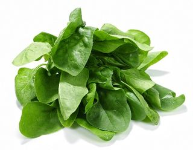
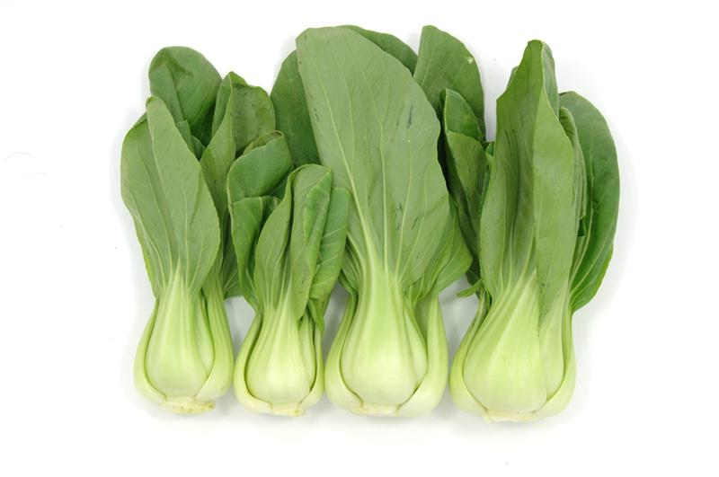
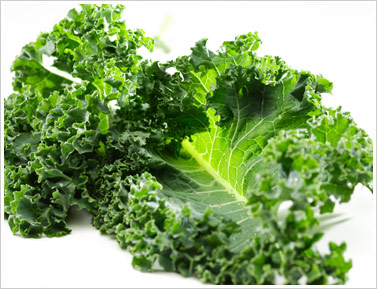
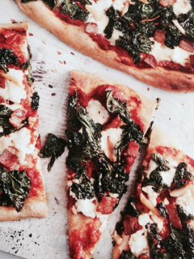

3 raisons d'aimer la "Green food"
Les épinards :
Ce sont des "booster de cerveau" remplis d'acides aminés (tyrosine)
Le chou de Chine:
De la famille des Brassicacées, ses propriétés luttent contre le cancer.

Le Kale:
C'est le best seller de l'année! Le plus riche en vitamines et minéraux, très faible en
calories!
Anti-inflammatoire,
Riche en Omega 3
Plus riche en fer que le bœuf!
Recette pizza au Kale:
Préparation: 15 min
Cuisson: 35 min
Ingrédient:
- une pâte à pizza (bio de préférence)
- Tranches de Bacon ou jambon
- Gousse d'ail finement hachée
- Un cœur de Kale cuit vapeur et coupé grossièrement
- Du sel
- Un filet d'huile d'olive
- De la sauce tomate fraîche
- 3 cs de ricotta
Préparation:

Mettre la pâte à pizza à température ambiante et préchauffer le fou à 180°
Dans une belle poêle anti adhésive (évite l'excès de matières grasses), faire sauter
le bacon ou les morceaux de jambon.
Dans une poêle à part, faire sauter l'ail jusqu'à ce qu'il devienne doré et ajouter le
Kale , saler un petit peu.
Couvrer et laisser cuire 5 min.
Recouvrir la pâte de sauce tomate, puis de ricotta.
Recouvrir du mélange Kale / ail et finir par les morceaux de bacon.
Verser un filer d'huile d'olive.
Enfourner pour 18 à 22 min, jusqu'à ce que le fromage ait fondu et la pâte
légèrement dorée sur les côtes.
Avant de servir , poivrer et quelques pincées de piment rouge!